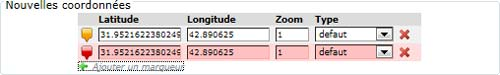
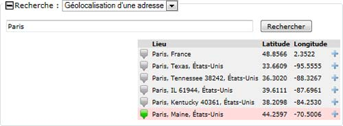

Sommaire > Géolocalisation des objets
Le plugin insère dans les pages d’édition des objets SPIP (rubrique, article, document, brève, mot-clef et auteur) une interface qui permet de géolocaliser l’objet. Pour les documents, il faut avoir installé le plugin Médiathèque pour avoir accès à la page de modification d’un document.
L’interface comporte principalement une carte, une zone d’édition des marqueurs et un bouton "Enregistrer" qui permet d’enregistrer les modifications en base de données.
Il est possible d’associer plusieurs points à chaque objet SPIP (la base de données supporte également l’inverse mais je n’ai pas encore implémenté cette fonctionnalité).
L’interface est constituée d’un tableau des marqueurs défini, dont un seul, surligné en rouge est actif sur la carte :

On peut modifier la position, le facteur de zoom associé et le type de marqueur. On peut également ajouter de nouveau marqueur grâce à la commande "ajouter un marqueur" située en dessous du tableau et supprimer les marqueurs grâce à la petite croix rouge à la fin de chaque ligne.
Normalement le positionnement du marqueur actif se fait en cliquant sur la carte et la modification du zoom est modifiant le zoom de la carte. Il est également possible d’éditer directement les valeurs mais cela ne met pas à jour la position de la carte (on peut considérer que c’est un bug).
Les types de marqueurs peuvent être édités depuis l’interface de paramétrage du plugin.
Pour les articles et les documents, il m’a semblé intéressant de pouvoir récupérer les coordonnées des articles ou documents proches dans le temps pour copier leur position.
Cette fonctionnalité est accessible en déployant le groupe "Copie des coordonnées des voisins" de l’interface. Cela ouvre une petite section dans laquelle apparaissent les articles et/ou documents les plus proches dans le temps :

En cliquant sur la coche verte à droite de chaque ligne on copie les coordonnées sur le marqueur actif (il faut qu’il y en ait un…).
Le groupe "Recherche par adresse" permet de rechercher une position selon son adresse (avec le GeoCoder de Google Maps) :

Après avoir cliqué sur le bouton "Rechercher", une liste des résultats possibles est affichée et il n’y a plus qu’à cliquer sur la coche verte de la ligne qui semble la plus pertinente.
Par défaut, seule la page de modification accessible par la médiathèque permet de géolocaliser le document, la popup qui s’ouvre depuis l’édition d’un article n’y donne pas accès (c’est un bug que je n’ai pas pu corriger : l’appel à l’interface se faisant en ajax, je n’arrive pas à initialiser les cartes correctement… Si quelqu’un a une idée…).
Pour palier ce petit désagrément, j’ai ajouté un paramétrage dans le plugin pour désactiver automatiquement l’ouverture du popup : le bouton "modifier" renvoie alors sur la page d’édition d’un document.
Pour activer ce comportement, il faut cocher la case "Désactiver l’édition des documents par boîte modale depuis un article" dans la partie "Paramétrage de la saisie dans l’espace privé" de l’onglet "Système" du paramétrage du plugin.